0x00 前言
本教程介绍的是 rAthena 系的方法。
以 RWC（Ragnarok World Championship，仙境传说全球精英邀请赛）的活动地图为例，我们一般拿到的地图资源文件都包含这 3 个文件：
2012rwc_01.gat2012rwc_01.gnd2012rwc_01.rsw
某些地图可能还有额外的 2 个文件：
2012rwc_01.extra2012rwc_01.bmp（游戏右上角的小地图）
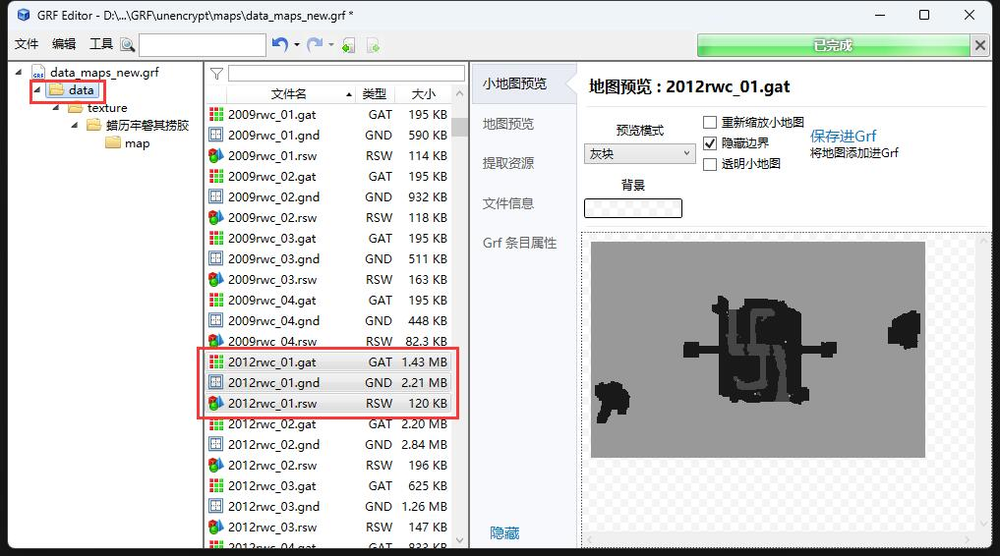
因为本文不涉及怎么创建/编辑地图，所以这些文件具体的作用是什么，我们暂时不需要知道。
只需要关心的是： 要怎么把这些文件添加到自己的 RO 服务器中呢 ？
—— 添加地图其实是涉及到 服务端 和 客户端 操作的，这里先说客户端：
0x10 添加地图到客户端
0x11 放置地图资源文件
把以下 4 个文件复制到客户端的 data 目录下：
2012rwc_01.gat2012rwc_01.gnd2012rwc_01.rsw2012rwc_01.extra（若有）
把这个小地图文件复制到客户端的 data/texture/蜡历牢磐其捞胶/map 目录下：
2012rwc_01.bmp（若有）
小地图文件不是必须的，缺失的情况下只会在进入地图时提示异常，不影响游戏：
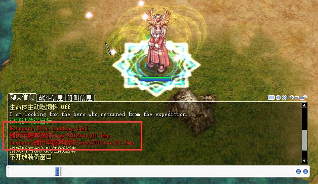
这里建议把所有地图资源文件打包到 GRF 文件中（需要确保相对路径一致），这样有个好处：如果你没有 *.bmp 小地图文件，就可以利用 GRF Editor 生成：
- 在
data下找到2012rwc_01.gat文件 - 点击 GRF Editor 右侧的
小地图预览 -> 保存进 Grf - 在
data/texture/蜡历牢磐其捞胶/map下可找到生成的小地图文件
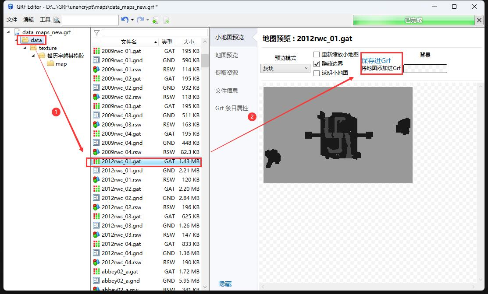
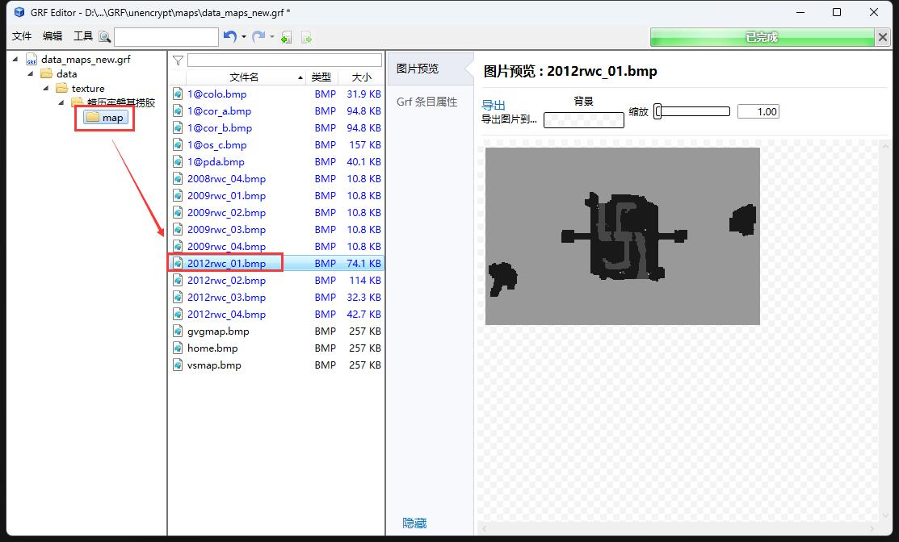
若需要为多个地图文件添加小地图，可以这么操作：
- 在
data下找到输入.gat筛选条件 - 左手有节奏不断按下键盘
↓键 - 右手配合节奏不断按下鼠标左键保存小地图
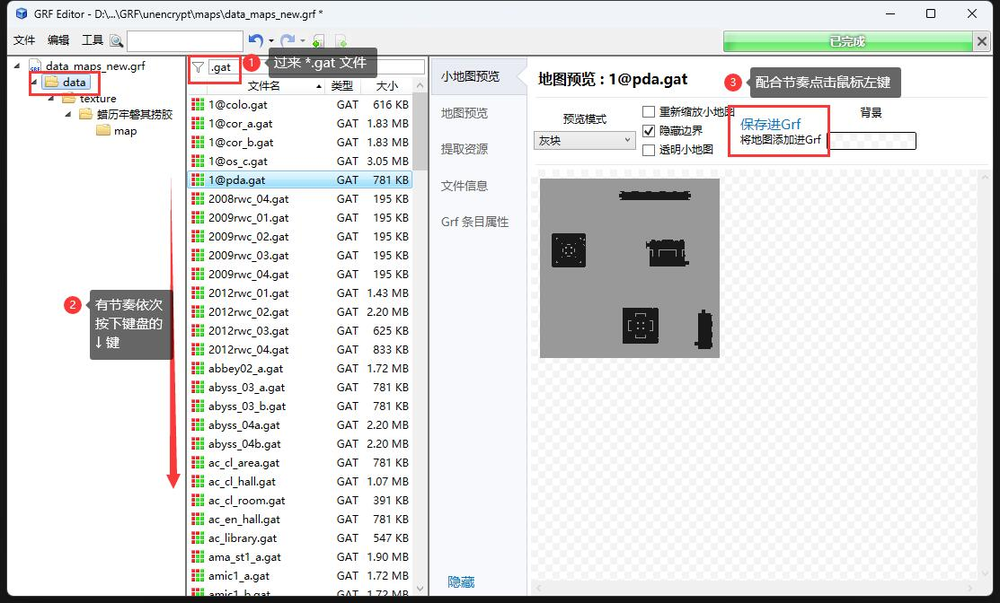
0x12 设置地图资源文件
使用 GBK 编码，打开并编辑 data/resnametable.txt，在其中新增以下内容：
2012rwc_01.gnd#2012rwc_01.gnd#
2012rwc_01.gat#2012rwc_01.gat#
2012rwc_01.rsw#2012rwc_01.rsw#
蜡历牢磐其捞胶/map/2012rwc_01.bmp#蜡历牢磐其捞胶/map/2012rwc_01.bmp#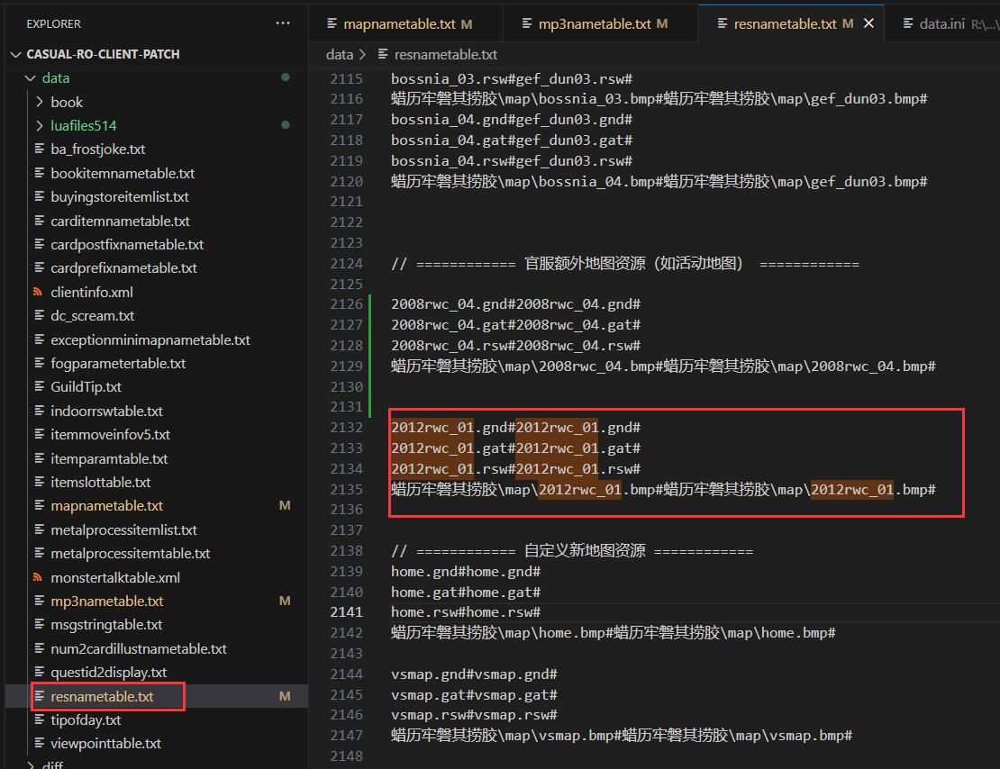
它们的格式为：
自定义地图名.gat#地图文件名.gat#
自定义地图名.gnd#地图文件名.gnd#
自定义地图名.rsw#地图文件名.rsw#
蜡历牢磐其捞胶/map/自定义地图名.bmp#蜡历牢磐其捞胶/map/地图文件名.bmp#一般情况下，自定义地图名 和 地图文件名 应该是一样的，除非你要做地图映射（地图映射在文章的最后会介绍）。
这里注意几点：
自定义地图名不能出现中文和空格，在后续所有配置中（包括客户端和服务端），都是用这个名字关联这张地图- 不需要配置
*.extra，即使你有2012rwc_01.extra - 需要配置
*.bmp，即使你没有2012rwc_01.bmp
0x13 设置地图名称
使用 GBK 编码，打开并编辑 data/mapnametable.txt，在其中新增一行： 2012rwc_01.rsw#2012 RWC 01# （顺序不重要）
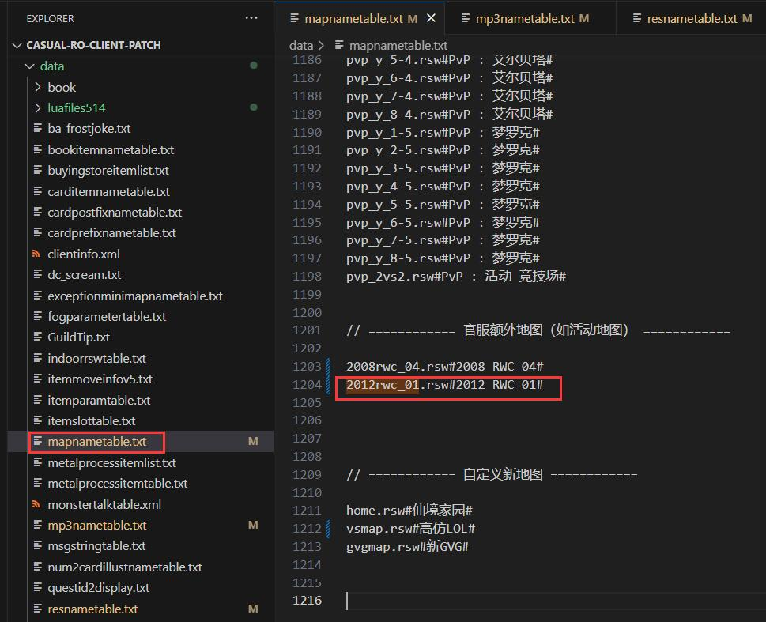
这行的格式为：自定义地图名.rsw#地图昵称#
其中：
自定义地图名需要和前面保持一致地图昵称可以是中英文和空格，它唯一的用途是在游戏中通过输入/where显示出来：
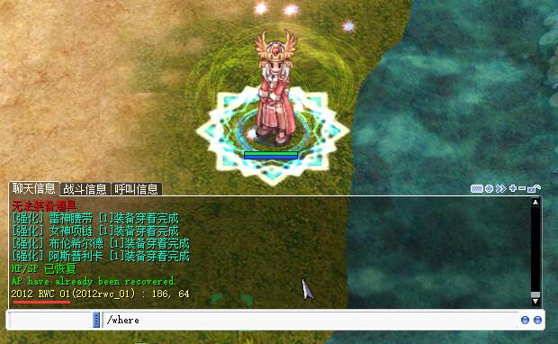
在 2023 版本之后的客户端，
/where命令所显示的昵称已经不是在此文件配置了，而是改到了System/mapInfo.lub文件中，详见本文附录过图标题
0x14 设置地图 BGM
使用 GBK 编码，打开并编辑 data/mp3nametable.txt，在其中新增一行： 2012rwc_01.rsw#bgm//100.mp3# （顺序不重要）
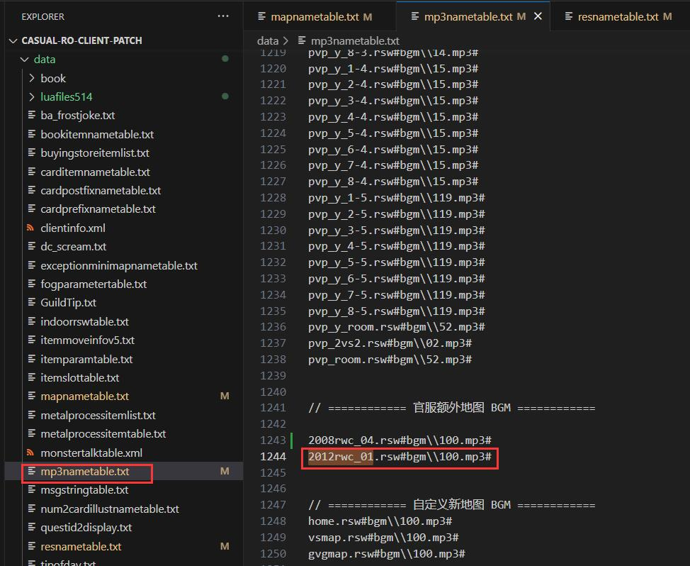
这行的格式为：自定义地图名.rsw#地图背景音乐文件路径#
其中：
自定义地图名需要和前面保持一致地图背景音乐路径在 RO 客户端根目录下的BGM目录中，//为 windows 的文件路径分隔符，随便选一个已存在的音乐文件即可：
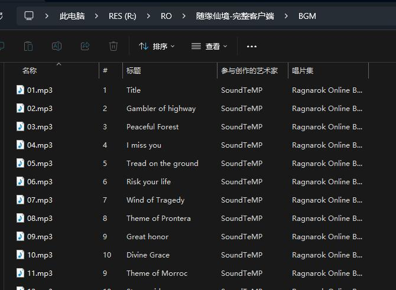
这里也可以制作一个喜欢的背景音乐放进去
0x20 添加地图到服务端
0x21 添加到地图列表
编辑 conf/maps_athena.conf，在其中新增一行： map: 2012rwc_01 （顺序不重要）
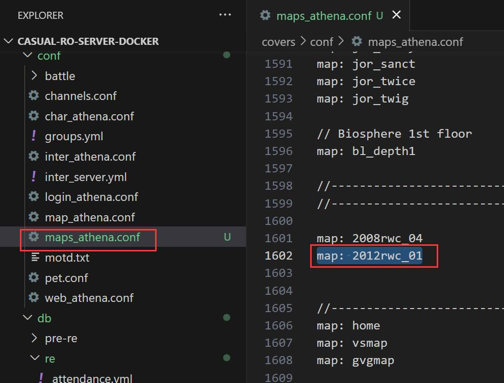
这行的格式为：map: 自定义地图名
其中 自定义地图名 需要和前面保持一致。
0x22 添加到地图索引列表
编辑 db/import/map_index.txt，在其中新增一行： 2012rwc_01 （顺序不重要）
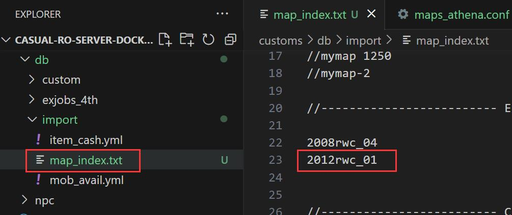
这行的格式只有：自定义地图名
其中 自定义地图名 需要和前面保持一致。
0x23 添加到地图缓存
如果你看过本系列的《SDE 基础使用指引》，你会知道在 SDE 的工具中，有一个 MapCache 编辑器，使用它打开地图缓存文件 db/import/map_cache.dat :
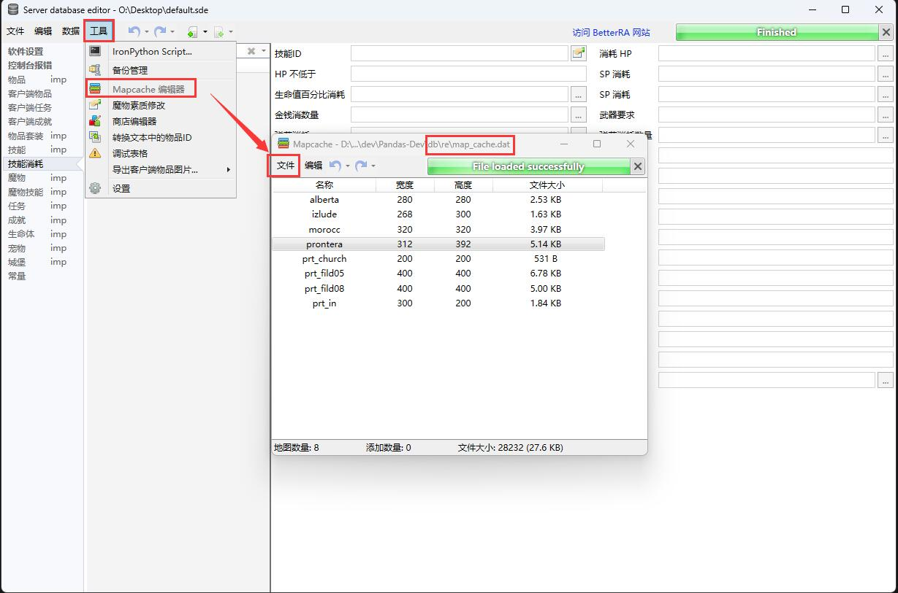
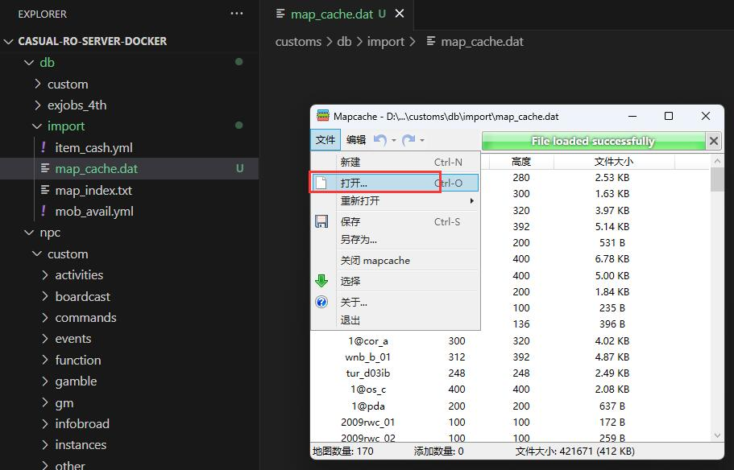
若你没有 db/import/map_cache.dat，可先点击 New 新建。
然后点击 Edit 编辑按钮，可以看到两个选项：
Merge...: 可以添加地图文件所在的 GRF，批量添加到地图缓存（工具会自动找到*.gat格式的地图文件）Add maps...: 一次只能选择单个*.gat格式的地图文件添加到地图缓存
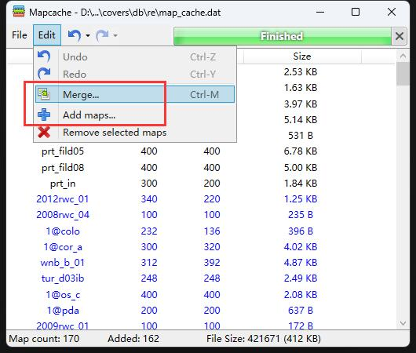
按需选择就好，你可以选择添加单个 2012rwc_01.gat 地图缓存。
这里我是直接添加整个 GRF 的，一劳永逸。不必担心添加所有地图缓存会不会导致 map_cache.dat 太大，我加了所有地图缓存才不到 3M 。
最后点击 File -> Save 保存即可。
其实用 WeeMapCache 也可以编辑地图缓存，操作方式都是差不多的。但是不推荐用这款工具，它之前有个版本会导致地图上的水区域会出 BUG，例如无法收集圣水、无法使用水球术等。
0x30 验证效果
现在所有配置已完成，进入游戏输入命令 @warp 2012rwc_01 即可移动到新添加的地图：
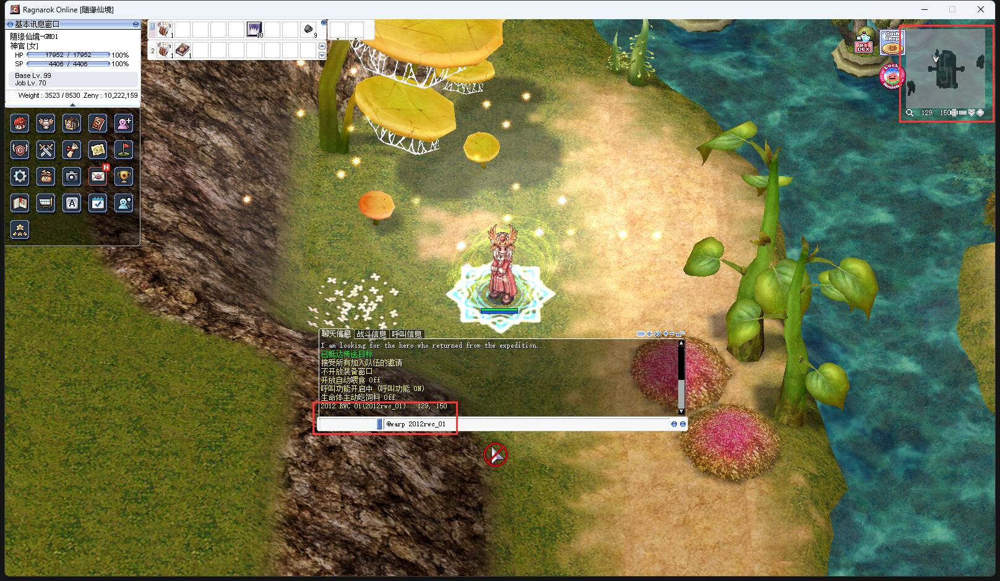
- 右上角有小地图
/where得到的地图昵称是2012 RWC 01
0x40 映射地图
可能你之前听到过「映射地图」，但是不知道是什么、也不知道应该怎么操作。
我以前面的场景作为例子，当你添加名为 2012rwc_01 的地图后，GM 要进入该地图，每次都要敲一遍命令 @warp 2012rwc_01，又长不容易记。
是不是可以给 2012rwc_01 加个别名，例如 rwc2012 就好记多了。
这时你可能会说：“在添加地图前，先把文件名改成 rwc2012 不就可以了吗” ？
其实是不行的，地图几个资源文件其实是通过文件名关联起来的，即使修改了文件名，客户端还是会用原本的文件名去找地图，结果就是找不到资源直接报错：
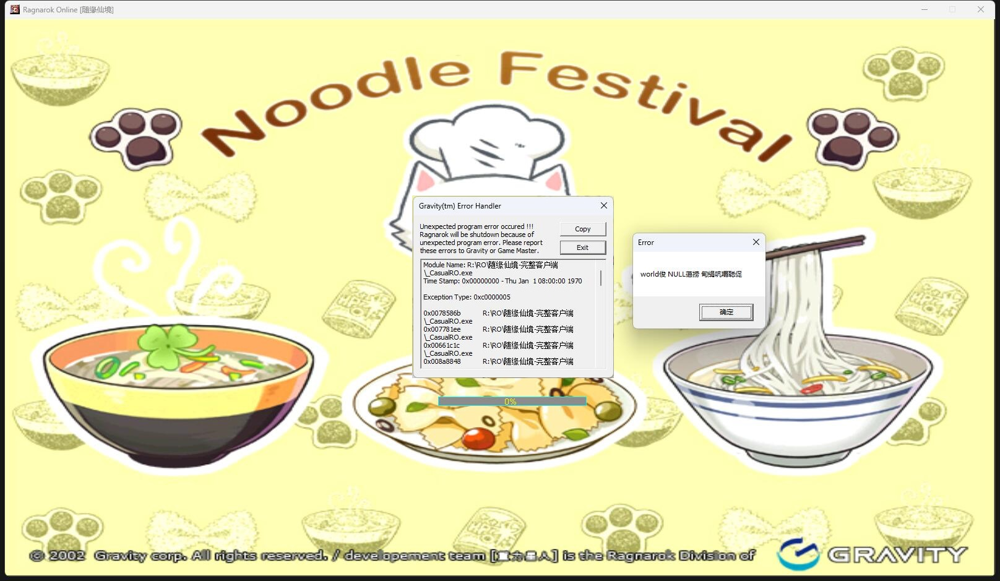
正确的做法应该是「映射地图」，操作方法非常简单，只需要把上文中预留的 自定义地图名 统一做修改即可，需要注意：
- 不能有中文
- 不能有空格
- 必须全局唯一
例如修改为 rwc2012。
另外需要注意的是，服务端在添加地图缓存 map_cache.dat 时，不要添加名为 2012rwc_01.gat 的缓存；而是需要把地图原文件复制到任意位置、重命名为 rwc2012：
2012rwc_01.gat -> rwc2012.gat2012rwc_01.gnd -> rwc2012.gnd2012rwc_01.rsw -> rwc2012.rsw2012rwc_01.extra -> rwc2012.extra（若有）
然后使用 MapCache 编辑器添加 rwc2012.gat 到地图缓存 map_cache.dat 中：
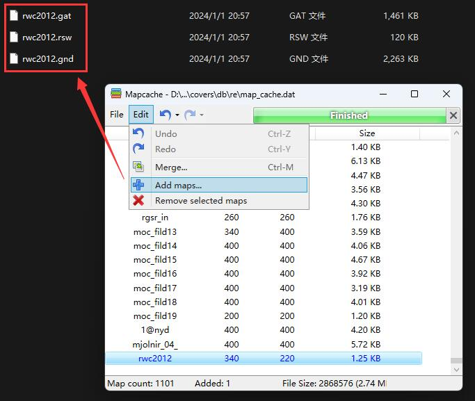
最后删除这几个文件即可（客户端不需要加载重命名后的文件）：
rwc2012.gatrwc2012.gndrwc2012.rswrwc2012.extra（若有）
这样做的目的是让服务端有一个地图索引名为 rwc2012，但实际上客户端找的地图资源是 2012rwc_01。
此后 GM 只需要敲命令 @warp rwc2012，就能进入地图 2012rwc_01。
0xB0 附：关于注释
特别注意，在 resnametable.txt 尽量不要写中文注释，如果一定要写也尽量使用英文字符 // --- 中文注释 --- 将其包围。
因为中文注释被游戏加载时实际上会变成韩文乱码，由于文字都是多字节的，乱码很可能会导致游戏加载 resnametable.txt 的内容错位，从而读取地图资源失败。
此时若进入被乱码的地图，客户端就会会抛出下图的错误而崩溃：
注释也不要出现
#号，这是地图资源文件的特殊分隔符
0xC0 附：地图缓存
关于地图缓存 map_cache.dat，在 rAthena 的 doc/map_cache.txt、和 PandasWS 的 conf/grf-files.txt 都有其说明：
自 SVN 版本约 10000 起，rAthena 的 map-server 不再直接读取 GRF 文件中的地图数据，而是从这个缓存文件中读取。
这意味着所有地图的必要信息都被存储在 map_cache.dat 中，以便服务器更高效地加载和管理地图。
因此若新增的地图没有缓存在 map_cache.dat，游戏中会无法进入该地图，同时提示 找不到地图 ：
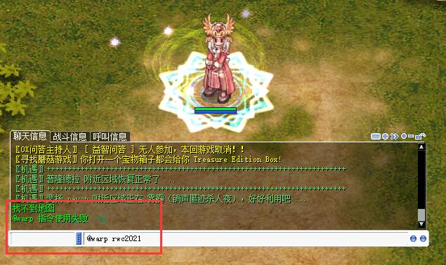
反之若地图只在 map_cache.dat 中，客户端却缺失该地图资源文件，当你强制用用 @warp 指令移动到该地图时，游戏就会崩溃：
0xD0 附：完整导出 地图+素材+模型
补充一个小技巧，当看到 GRF 里面有张地图很喜欢、但是因为它引用了很多素材、模型，还都放在不同的文件夹，此时应该怎么把这张地图的相关文件一个不漏地全部导出呢？
其实很简单，只需要用 BrowEdit3 加载目标地图后，确保没有缺失的素材或模型（有则自行替换再保存），然后选择 File -> Export to floder 即可完整导出：
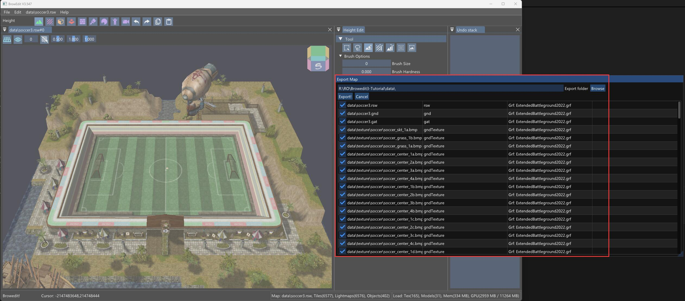
关于 BrowEdit3 的系列教程可到 这里 学习
0xE0 附：过图标题
有些同学可能好奇过图显示地图名称的标题是怎么做的：
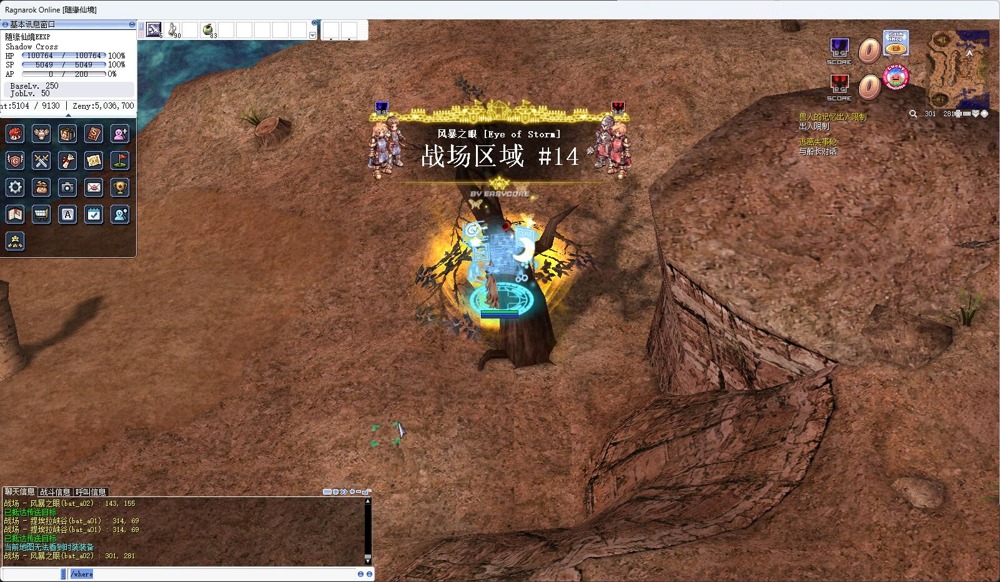
首先要知道，它的总开关有 2 处地方：
第一个总开关是在 DIFF 时的 Disable Map sign display，如果关掉，则所有过图标题都不会显示：
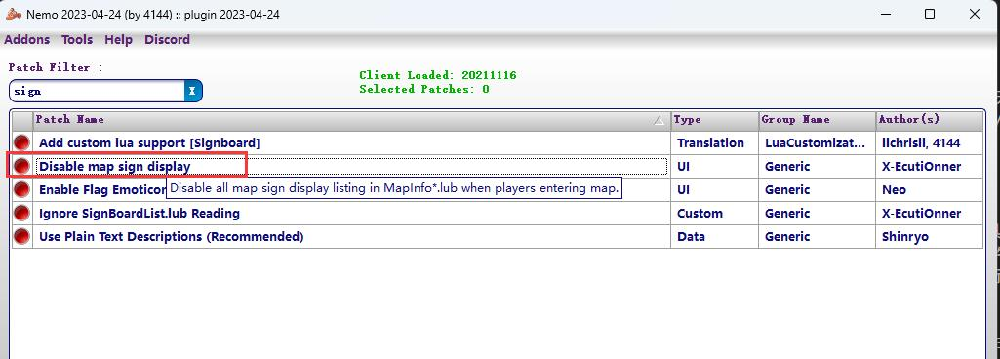
第二个总开关时在 游戏设置 中的 标记地图名称，如果去掉勾选，则所有过图标题都不会显示：
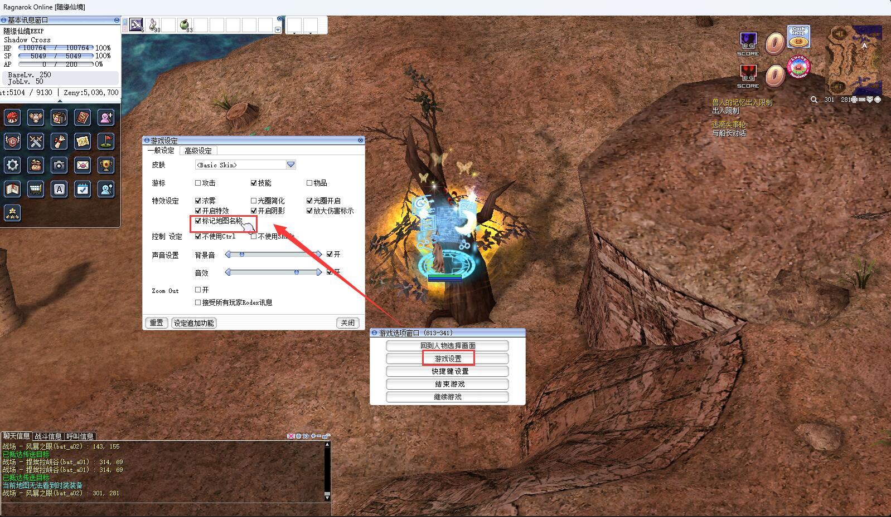
确保这两个开关正常的前提下，配置 System/mapInfo.lub 文件，单个地图的配置格式如下：
["bat_a01.rsw"] = {
displayName = "战场 - 提埃拉峡谷",
notifyEnter = true,
signName = {
mainTitle = "战场区域 #01",
subTitle = "提耶拉峡谷 [Tierra Gorge]"
},
backgroundBmp = "extended_bg1"
},其中：
bat_a01.rsw: 表示在resnametable.txt中配置的自定义地图名称，它可以是真实存在资源的地图、也可以是映射的地图displayName: 在 2023 版本后，/where命令所显示的地图昵称notifyEnter: 该地图在过图时，是否在屏幕中间显示地图名称的标题mainTitle: 对应过图标题中字体最大的主标题文字（可选）subTitle: 对应过图标题中字体最小的副标题文字（可选）backgroundBmp: 过图标题的透明背景图片，对应资源目录在data\texture\蜡历牢磐其捞胶\display_mapname\${backgroundBmp}.png
backgroundBmp高度可以有 3 种规格：主标题+副标题、只有主标题、只有副标题